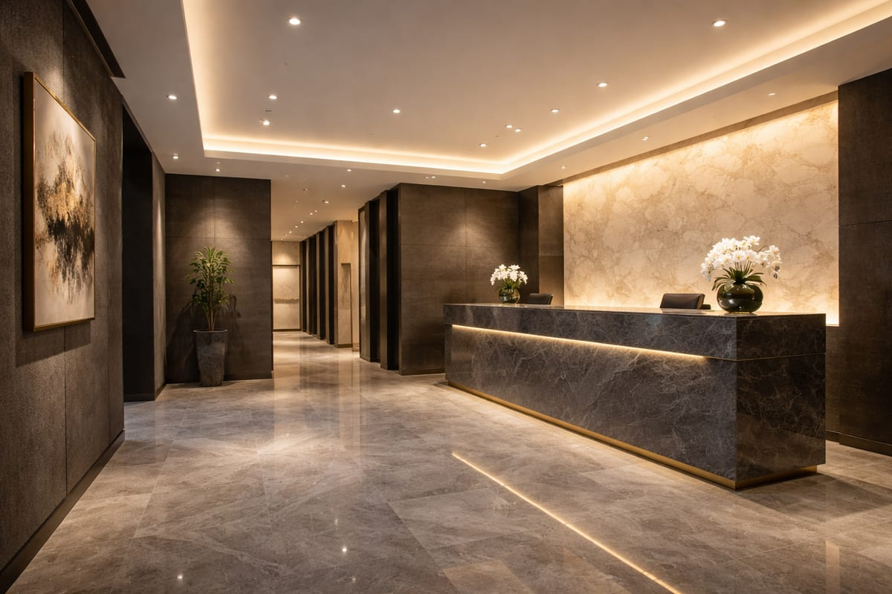
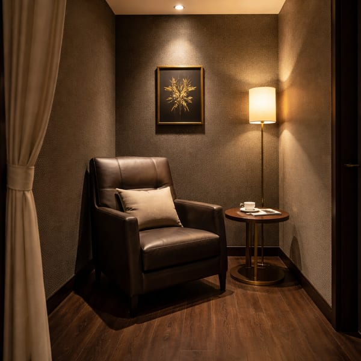
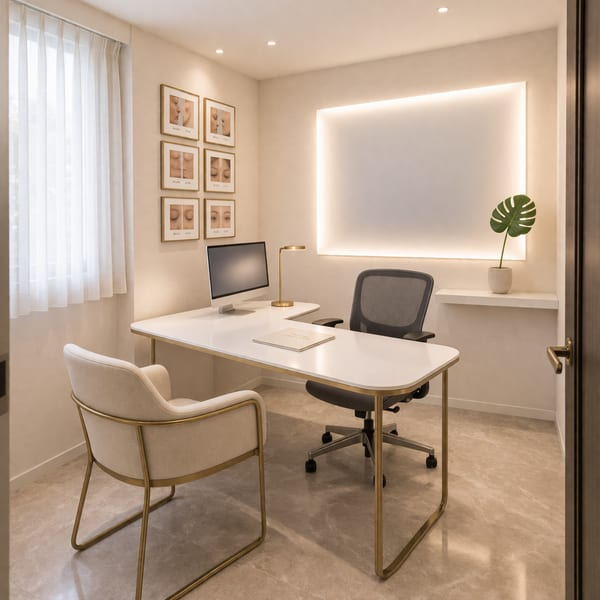
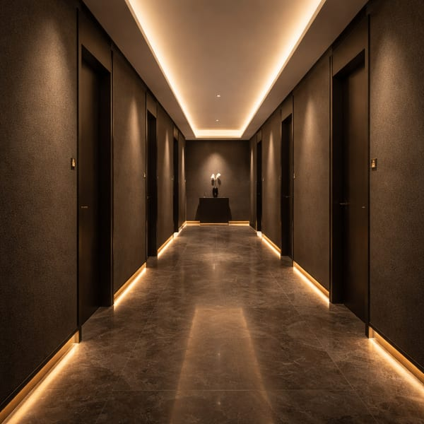
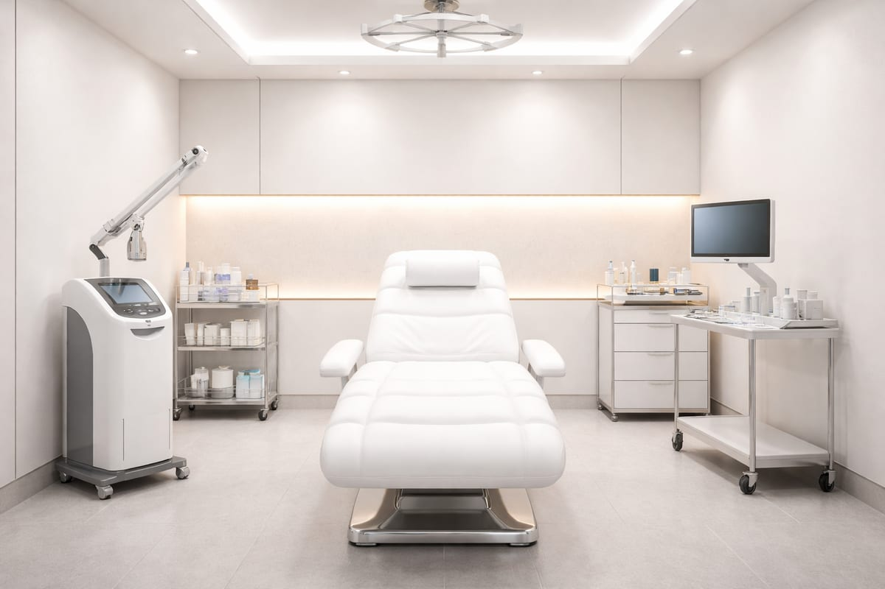
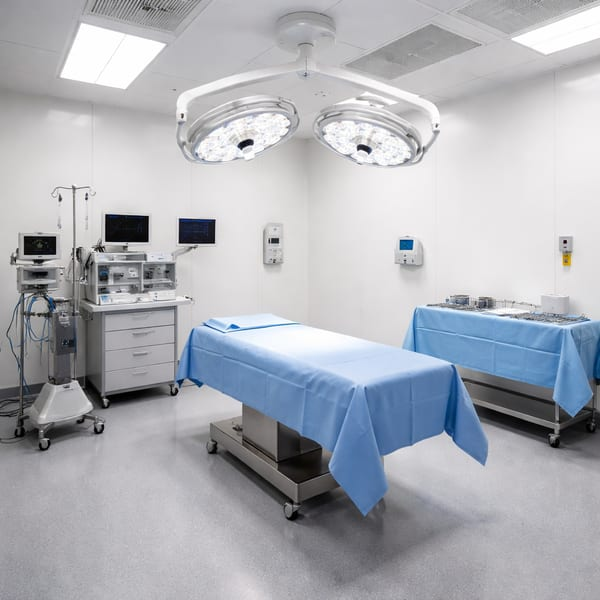
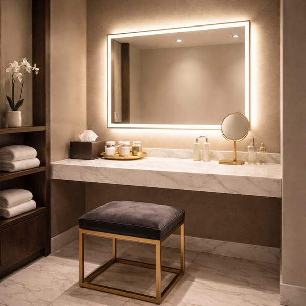
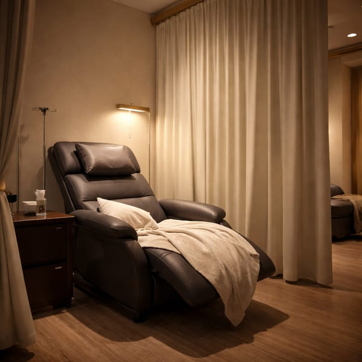

CLINIC
クリニック情報・アクセス
東京メトロ表参道駅 A2出口より徒歩3分。完全予約制のプライベート空間です。
INTERIOR
院内のご案内








INFORMATION
クリニック概要
| クリニック名 | 青木ビューティークリニック（Aoki Beauty Clinic） |
|---|---|
| 診療科目 | 美容外科・美容皮膚科 |
| 院長 | 青木 誠一（日本形成外科学会専門医 / 日本美容外科学会専門医） |
| 住所 | 〒150-0001 東京都渋谷区神宮前5-XX-XX AOKIビルディング 3F |
| 電話番号 | 0120-XXX-XXX（10:00〜19:00） |
| 最寄駅 | 東京メトロ 銀座線・半蔵門線・千代田線「表参道」駅 A2出口 徒歩3分 |
| 診療時間 | 10:00〜19:00（完全予約制） |
| 休診日 | 水曜日・祝日 |
| 支払方法 | 現金 / クレジットカード（VISA・Master・AMEX・JCB）/ 医療ローン（最大60回分割） |
| 駐車場 | 提携駐車場あり（施術の方は2時間無料） |
HOURS
| 月 | 火 | 水 | 木 | 金 | 土 | 日 | |
|---|---|---|---|---|---|---|---|
| 10:00〜19:00 | ○ | ○ | 休 | ○ | ○ | ○ | ○ |
※ 完全予約制です。当日予約も空きがあればお受けできます。
※ 祝日は休診となります。
ACCESS
〒150-0001東京都渋谷区神宮前5-XX-XX
AOKIビルディング 3F
TRAIN
東京メトロ 表参道駅 — A2出口より徒歩3分
- 銀座線
- 半蔵門線
- 千代田線
JR 原宿駅 — 表参道口より徒歩10分
CAR
提携駐車場: タイムズ神宮前（徒歩1分）
施術を受けられる方は2時間分の駐車券をお渡しします
DIRECTIONS
- 1 A2出口を出て、表参道のケヤキ並木を青山方面へ進む
- 2 1つ目の信号を右折
- 3 50m先、左手にあるガラス張りのビル（AOKIビルディング）の3Fです
- 4 エレベーターで3Fへお上がりください
OUR COMMITMENT
当院のこだわり
完全個室の待合・施術空間
受付からお帰りまで、他の患者様と顔を合わせることがない導線設計。待合室も施術室もすべて完全個室です。
最新の医療機器を完備
ウルセラ（医療ハイフ）、ジェントルマックスプロ（脱毛レーザー）、ピコシュア（レーザートーニング）等、エビデンスのある最新機器を導入しています。
徹底した衛生管理
手術室はクラス10,000のクリーンルーム規格。使い捨て器具の使用、機器の滅菌処理など、感染対策を徹底しています。

Reservation
ご来院をお待ちしております
表参道駅A2出口から徒歩3分。完全予約制のプライベート空間で、
あなたのお悩みをお聞かせください。
受付時間 10:00〜19:00（水曜・祝日休診）
〒150-0001 東京都渋谷区神宮前5-XX-XX AOKIビルディング 3F